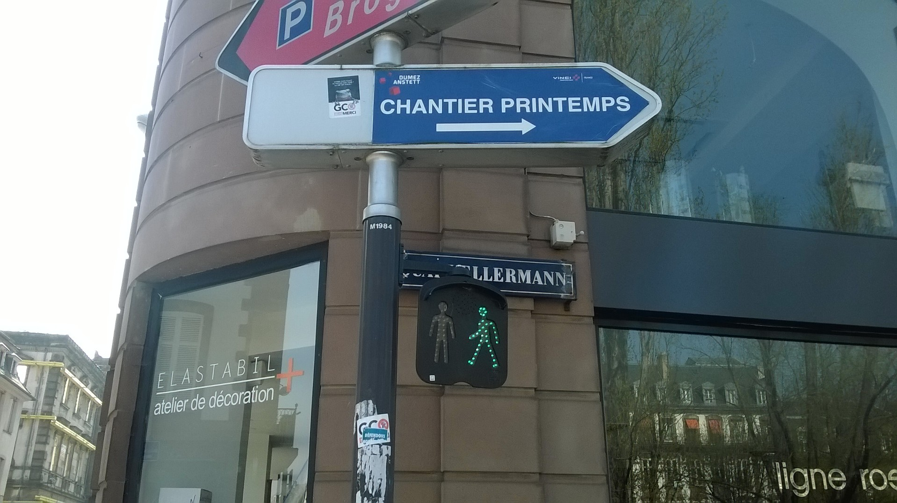

| cynthia montier | non-site en construction | bio + contact |
| [ai] action intervention | - - -radium girls gang filles fantômes anti-nucléaire crew de graffiti fictif |
-utopies réalisables
2017 | ||||||
| [ai]chantier contemporain résidence de travail 2017-2020 |
-mécanique de travail @représentation |
novembre 2017 chantier Kellerman, Strasbourg |
notice | |||||
|  | @présentation publique | visite de chantier, connaissez-vous votre voisin ?, eurométropole de strasbourg. octobre 2018 chantier kellerman, strasbourg |
notice | |||||
| sans finition béton (s.f.b. kit) | @éditions | présentation des éditions sans finition béton | @présentation publique activation | 01-31 octobre 2019 journées de l'architecture - maison de l'architecture, caeu, chantier kellerman strasbourg | 28-29 septembre 2019 rebelrebel #3 salon du fanzine, frac paca, marseille |
|||
| [ai] corps et graphies, domestiquer la tâche, résidence de travail janvier-avril 2018 |
-mise en pli @présentation publique |
avril 2018 hôtel chicoutimi (QC, canada)
octobre 2018 festival non-aligné.e.s, la reprise, l'an 1. la générale (paris) one piece at the time, les arts tactiques au travail. cabinet du livre d'artiste (rennes) mars 2019grande révolution domestique, familistère de guise |
GRD-GUISE
vidéo @artpress | |||||
| [ai] partenariat négocié -les ouvriers de mille neuf cent longtemps @visite |
octobre 2018 centre technique de la meinau, strasbourg |
notice video |
||||||
| [ai] collection post-posters antonio gallego & mathieu tremblin -lignes de désir ft myriam suchet |
@edition @présentation publique |
14.03 - 07.04 2019 exposition banlieue banlieue - post-posters - anahita hekmat syndicat potentiel, strasbourg mai 2019 ateliers ouverts, semencerie strasbourg exposition invisible rivesaltes |
cartonpate | |||||
| [ai] rituel de marelle - esoterico-geographie ft ophélie naessens @présentation publique |
magasin des horizons | protocole | note d'intention | |||||
| [rc]recherche creation utopies realisables. politique et création de l'utopie au présent |
04–06.04.19 syndicat potentiel, apollonia europe exchange, chantier kellerman, université de strasbourg | laboratoire temporaire tarot fertile boîte à outils terreau collectif | ||||||
| [rc] indiscipline.s œuvrière.s ft myriam suchet | archipel | lien | ||||||
| [rc]université buissonnière | lien |
{kind=link}